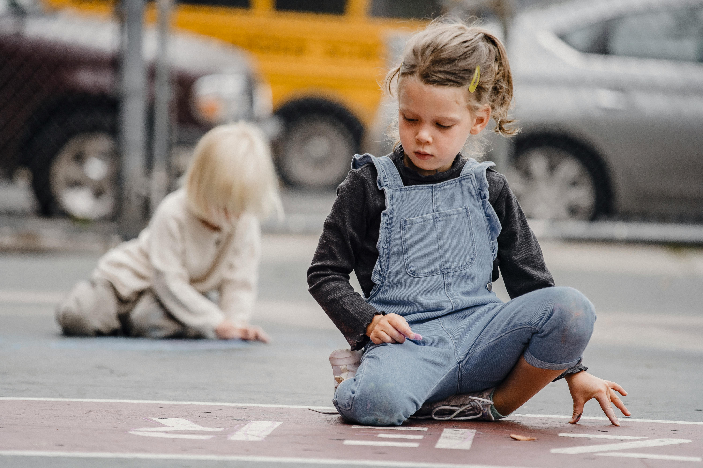

Academics at WisdomGate
Our curriculum challenges students with authentic and transformative learning opportunities to ensure they are prepared for the next step in their academic journeys and inspired to be life-long learners as well as mindful and engaged citizens of the world.
Courses in the Humanities, Classics, History, World Languages, English, Religious Studies, and the Arts provide an excellent liberal arts education rooted in foundational skills and knowledge: thinking critically, writing effectively, speaking forcefully, and solving problems analytically. With this experience, Hill students develop the importance of self-knowledge, individual responsibility, and a duty to others.
With the launch of the Quadrivium Curriculum, Hill moved away from traditional course sequencing and creates new tracks and electives in science and mathematics that emphasize collaboration, interdisciplinary connections, real-world problem solving, scientific design, and core disciplinary ideas. This newly designed curriculum allows students to explore courses in engineering, accelerated and integrated math and science, computer science, technology, digital arts, and electronic media.
Academic Extra Help
A major advantage of attending a boarding school is the availability of faculty and their willingness to provide extra help to students. Our teachers are always willing to go the extra mile to ensure students are thriving in their academic pursuits. Teachers often offer extra help sessions in the Library, Writing Center, during Flex Periods during the academic day, as well as in the evening hours during study hall.
At The Hill School the intent of this program is:
- To encourage a student and support his or her effort
- To promote student/teacher interaction, understanding, and respect
- To improve a student’s understanding and performance in a subject when classroom instruction and student effort have not produced the desired effect
- To help a student catch up on material missed because of illness or because of School-sponsored activities.
2023-24 Academic Schedule
Click on the link below to view a PDF of this year's daily schedule.
Academic Schedule